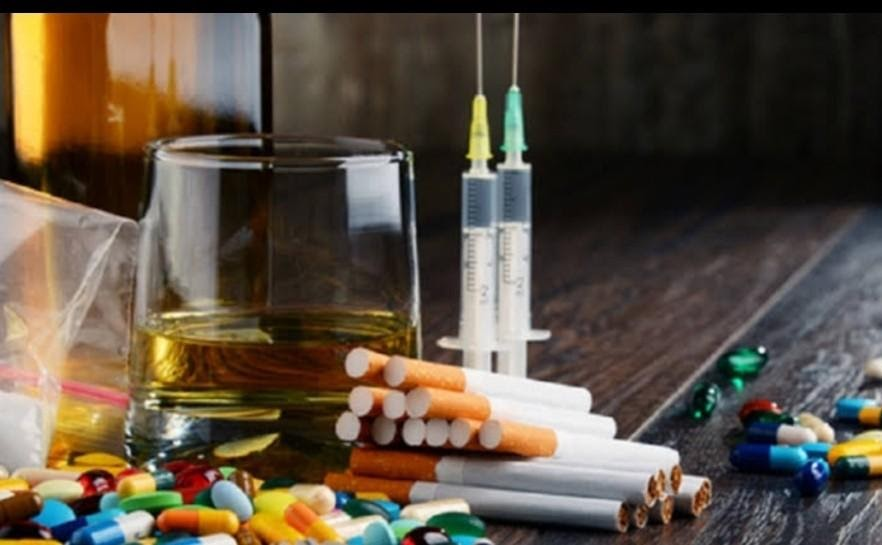

NARKOBA
by : Cah
Narkoba adalah singkatan dari narkotika dan obat/bahan berbahaya. Selain itu, istilah lain yang diperkenalkan oleh Departemen Kesehatan Republik Indonesia adalah napza yang merupakan singkatan dari Narkotika, Psikotropika dan Zat Adiktif. Kedua istilah ini, baik narkoba ataupun napza, mengacu pada sekelompok zat yang umumnya mempunyai risiko kecanduan bagi penggunanya. Menurut pakar kesehatan, narkoba sebenarnya adalah psikotropika yang biasa dipakai untuk membius pasien saat hendak dioperasi atau obat-obatan untuk penyakit tertentu. Namun, kini persepsi itu disalahgunakan akibat pemakaian yang telah di luar batas dosis. Hingga kini penyebaran narkoba sudah hampir tak bisa dicegah mengingat hampir seluruh penduduk dunia dapat dengan mudah mendapat narkoba dari oknum-oknum yang tidak bertanggung jawab. Misalnya saja dari bandar narkoba yang senang mencari mangsa di daerah sekolah, diskotik, tempat pelacuran, dan tempat-tempat perkumpulan geng. Tentu saja hal ini bisa membuat para orang tua dan ormas pemerintah khawatir akan penyebaran narkoba yang begitu merajalela. Upaya pemberantasan narkoba pun sudah sering dilakukan, namun masih sedikit kemungkinan untuk menghindarkan narkoba dari kalangan remaja maupun dewasa, bahkan anak-anak usia SD dan SMP pun banyak yang terjerumus menggunakan narkoba. Hingga saat ini upaya yang paling efektif untuk mencegah penyalahgunaan narkoba pada anak-anak adalah dari pendidikan keluarga. Orang tua diharapkan dapat mengawasi dan mendidik anaknya untuk selalu menjauhi narkoba
Efek-efek narkoba
- Halusinogen, bila dikonsumsi dalam dosis tertentu dapat mengakibatkan seseorang menjadi berhalusinasi dengan melihat suatu hal atau benda yang sebenarnya tidak ada atau tidak nyata. Contoh halusinogen adalah kokain dan LTD
- Stimulan bisa mengakibatkan kerja organ tubuh, seperti jantung dan otak, bekerja lebih cepat dari biasanya sehingga seseorang lebih bertenaga untuk sementara waktu. Selain itu, stimulan cenderung membuat seorang pengguna lebih senang dan gembira untuk sementara waktu
- Depresan bisa menekan sistem saraf pusat dan mengurangi aktivitas fungsional tubuh sehingga pemakai merasa tenang, bahkan bisa membuat pemakai tidur dan tidak sadarkan diri. Contoh depresan adalah putow
- Adiktif, seseorang yang sudah mengkonsumsi narkoba biasanya akan ingin dan ingin lagi karena zat tertentu dalam narkoba mengakibatkan seseorang cenderung bersifat pasif. Karena, secara tidak langsung narkoba memutus sarat-saraf dalam otak. Contoh narkoba yang menghasilkan efek ini, antara lain ganja, heroin, dan putow
- Jika sudah mengonsumsi terlalu lama dan ketergantungan, lambat laun organ dalam tubuh akan rusak dan jika sudah melebihi takaran, pengguna itu akan overdosis dan akhirnya mengalami kematian

Referensi:
www.academia.edu/7880127/ARTIKEL_NARKOBA